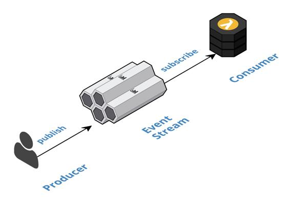

Event Streaming
Leverage a fully managed streaming service to implement all inter-component communication asynchronously, whereby upstream components delegate processing to downstream components by publishing domain events that are consumed downstream.
